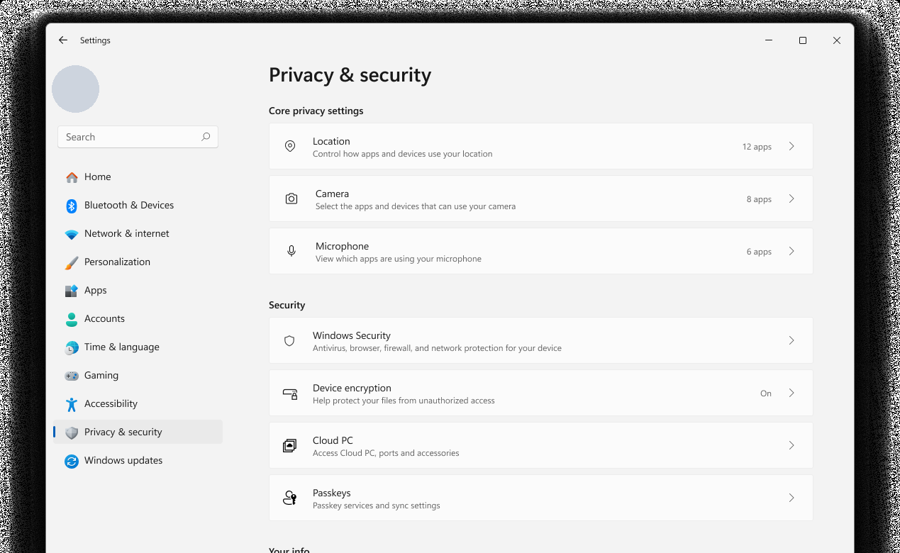
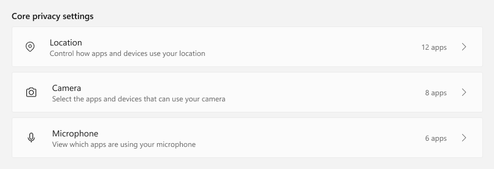

Windows interaction design
Windows Privacy Settings
Know what has access.
Making privacy permissions easier to discover and tune, with clear categories and app-access counts at a glance.
Shipped redesign · 4M+ monthly active devices
The problem, in one minute
People could find the permissions page, but still had to open individual settings to understand which apps had access. CSAT verbatims helped explain a behavior visible in telemetry: arriving, then leaving without changing anything.
I contributed interaction designs informed by those signals and implemented the architectural and rendering changes. The focus was clearer hierarchy, visible access information, and trustworthy loading behavior — not adding another set of controls.
- +10%
- feature discoverability
- −1.57s
- perceived load time
- 6 groups
- replacing one flat list
These outcomes describe the shipped refresh, combining design and engineering changes; they are not results from an isolated comparison of the diagrams below.
01 / Information architecture
Group by concern, not a flat inventory
The choice: organize permissions around what they protect. A person worried about their microphone should not need to understand the underlying API categories. Location, camera, and microphone become a prominent core group; the remaining controls gain named destinations.
Before: one list to scan
- Location
- Camera
- Microphone
- Voice activation
- Notifications
- Account info
- More permissions…
After: a hierarchy to navigate
- Core privacy settingsLocation · Camera · Microphone
- Security
- Your info
- Communication
- File access
- System
- Core controls first. High-stakes permissions get a clear starting point.
- Security stays distinct. Related protections remain nearby without becoming one undifferentiated category.
Trade-off: grouping adds headings and demands meaningful labels. Reusing the same row component keeps scanning consistent, so visitors learn one interaction pattern rather than a different layout for each category.
02 / Access visibility
Put the answer in the scan path
The choice: show an access count before someone opens a permission. The screenshot makes the change concrete: each core row now answers “how many apps?” A count summarizes access; it does not mean those apps are using the sensor right now.

-
Loading
LocationReserve space; do not imply zero.
-
Access off
LocationAccess offPermission disabled across the system.
-
Zero
Location0 appsEnabled, but no apps granted access.
-
One
Location1 appSingular phrasing matches the count.
-
Many
Location12 appsSummarize before showing app details.
Trade-off: a concise summary can hide important distinctions. Loading, disabled access, and an empty app list must not look interchangeable. Stable placeholders and explicit wording make those differences visible while retaining a route to the underlying details.
03 / Layout under pressure
Let the content set the height
The change: move away from a header sized for a comfortable English string. Spanish and Japanese checks exposed different text lengths and shapes. The component needed to absorb another line without clipping the message or displacing its neighboring controls.
Fixed-height assumption
Expanded text is clipped.
Content-driven height
Text wraps; the control stays aligned.
Trade-off: flexible rows take more vertical space, but preserve meaning across languages. Plural forms and word order belong in the component design, not in a late patch that shortens or hides the message.
What I would carry forward
The rendering work supported the same interaction goal: present a stable, understandable page promptly. Contributing to the design and implementing it kept performance constraints in the conversation while the component could still change.
- Design the non-happy paths early. Empty, disabled, loading, and expanded-text states reveal whether the component communicates reliably, not just whether the ideal screen looks finished.
- Pair behavioral signals with people's words. Telemetry can flag where visitors stop; verbatims help explain why. Together they make the next design question more specific.
Screens show the public-facing Windows experience. Internal planning artifacts and unreleased surfaces are not included. Diagrams explain the documented decisions; they are not original design-history evidence.